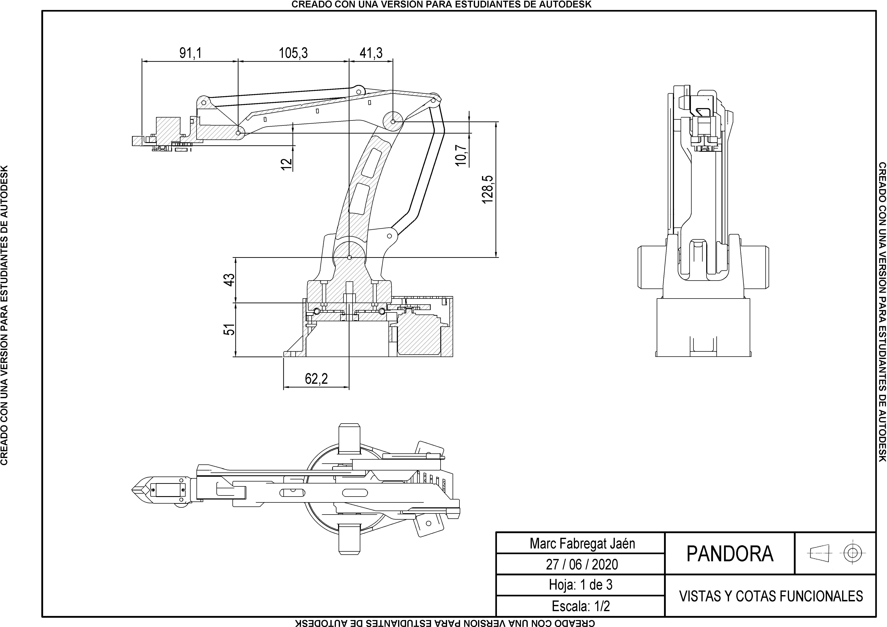
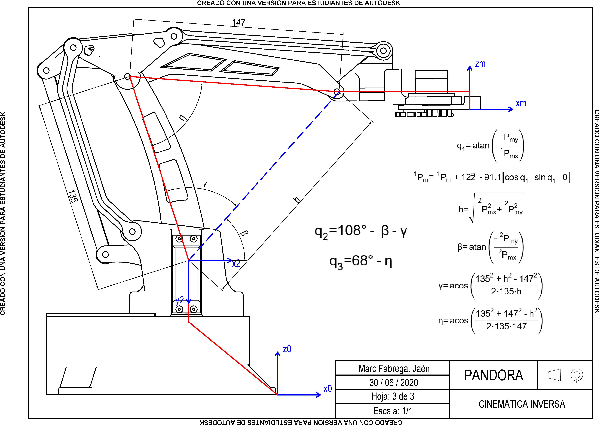

Diseño
El objetivo del proyecto es construir una versión reducida de un robot industrial, para su posterior programación e implementación en diferentes aplicaciones. El diseño del robot está basado en un robot de paletizado típicamente utilizado en la industria, como el robot IRB 760 de ABB, la serie M-410 de FANUC o el KR 40 PA de KUKA. La característica más determinante de este tipo de robots es que solo tienen 4 grados de libertad y su efector final siempre es paralelo al suelo o plano de trabajo. Esto es debido a la combinacion de 2 paralelogramos articulados, los cuales se estudiarán posteriormente.
Para la fabricación, se han impreso las piezas 3D usando plástico ABS. Se han utilizado 3 servomotores MG996R para las articulaciones principales por su alto par motor, y un micro servo SG90 para accionar el efector final. La elección de los materiales y los motores resulta en un robot muy económico y fácil de construir. Siguiendo la filosofía de economizar el proyecto, se ha optado por usar como fuente de alimentación para los motores una fuente ATX que estaba en desuso, para lo cual ha sido necesario adaptarla a la alimentación requerida por los motores, ya que es diferente a la que demanda un ordenador.
Para evitar pares y momentos contraproducentes debido al peso del motor, se ha optado por colocar el motor que acciona la tercera articulación en la base, trasladando el par mediante un paralelogramo articulado. Así, se evitan fuerzas perjudiciales y se gana eficiencia.
Cinemática directa
El estudio de la cinemática directa del robot nos permite conocer qué posición y orientación tendrá el manipulador o efector final a partir de las posiciones angulares de las articulaciones. Para ello, se utlizan los parámetros de Denavit-Hartenberg. Consiste en relacionar los sistemas de referencia de cada eslabón del robot mediante 4 valores que dependen únicamente de la posición angular de cada motor. Esto nos permite calcular la matriz de transformación del eslabón que nos interese o directamente del manipulador.

En azul, vemos los sistemas de referencia de cada eslabón. Se puede relacionar cualquier pareja de sistemas de referencia utilizando los parametros tabulados (theta, d, a, alpha).
En rojo, se aprecia la combinación de paralelogramos articulados que provocan que el manipulador siempre esté paralelo al espacio de trabajo, siendo el rasgo característico de los robots de paletizado. Esto deja al robot con 4 grados de libertad: traslación en los 3 ejes cartesianos y una rotación sobre el eje de la base.
Cinemática inversa
La cinemática inversa consiste en calcular las posiciones articulares del robot que permitan colocar el manipulador en la posición y orientación buscadas. Para ello, es necesario conocer los parámetros de Denavit-Hartenberg calculados anteriormente y la matriz de transformación del manipulador (Tm), la cual nos da la información de la rotación y posición (Pm) del efector final.
El primer paso será calcular la posición angular de la base. Para esta primera articulación, su ángulo será independiente de las otras articulaciones, ya que solo depende de las coordenadas x e y del manipulador. Aunque cabe destacar que para los sistemas de coordenadas elegidos, es necesario hacer una previa transformación de las coordenadas de posición del efector final: inicialmente las coordenadas están expresadas respecto al sistema 0, y mediante los parámetros DH se expresarán respecto al sistema de referencia 1.
Para las otras articulaciones ocurre lo mismo, se deben expresar las coordenadas respecto al sistema de referencia 2 usando la matriz de transformación calculable a partir de los parámetros DH. También, se debe aplicar una corrección a las coordenadas de posición del manipulador, ya que la articulación 4 solamente es necesaria para corregir el componente z del efector final, con esto obtenemos una nueva Pm. Lo siguiente será pura geometría, se obtendrán las posiciones angulares de las articulaciones relacionando ángulos y distancias.
Aplicaciones
Para poner a prueba el robot se ha programado una sencilla aplicación para mover un reloj, utilizando un Arduino Mega 2560 como controlador.
A modo de futuras mejoras, se pueden diseñar diferentes tipos de efectores finales, además de la pinza, para diferentes tipos de agarre. También, se podría implementar un sistema de visión artificial para habilitar potenciales aplicaciones nuevas, como sistemas de clasificación y ordenación.